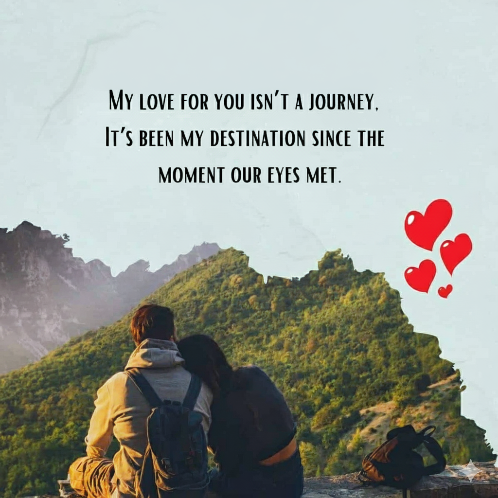

Whispers of the Heart: A Tale of Love and Redemption
I'm asking you to follow a specific path I made for you: "Dil se msg" first, then the "Apology", and finally, the "Letter". This journey is just for us.
Everything you'll read was crafted with the deepest sincerity,
and every effort was made only for you to show my commitment to our love and growth.
Timeline

The moment our paths crossed, my life wasn't just changed—it was completely rewritten.
It wasn't a gradual thing for me; it was love at first sight, a feeling so clear and strong it felt like a force of nature.
It was as if a part of my soul, which had been missing my whole life, suddenly snapped into place the second I saw you.
I've been in love with you since we were kids, and that first meeting felt like the universe finally giving me the key to what I already knew in my heart.
You weren't just the prettiest girl in the room; you were my Queen, the person I was always meant to be with.
When our eyes met, the world around us completely faded out. All the noise, all the people—they vanished.
Time stopped just for us. In that single, breathtaking moment, I felt a deep, peaceful recognition, like seeing a long-lost part of myself.
I remember every detail: the way you smiled, the sound of your laugh, and the incredible feeling of being drawn to you like a magnet.
That day wasn't just the start of our story; it was the moment the rest of my life became worth living.
You became my whole world, my best friend, my deepest love, and my true home.
From that second on, every thought, every dream, and every step I took was aimed toward you.
.
We have a shared history that is sacred, yet it includes a chapter that was pure agony.
We entered a storm so fierce it tried to tear us apart, leaving us disconnected and lost in a cold place of misunderstanding.
You were everything I needed, yet we were strangers.
When you were distant, my world didn't just feel dark; it felt like it had been emptied of light, color, and sound.
I missed you so intensely that every breath was a reminder of the void you left.
But even when the darkness was deepest, that original spark the love at first sight that made you my Queen it refused to die.
It was the unshakeable truth, the bedrock of our whole existence.
We didn't just get over our problems; we fought for our connection.
We crawled back from the edge, choosing vulnerability, choosing honesty, and choosing to forgive the scars left by the fight.
Every painful conversation, every shared tear, was an act of raw courage.
Our love was placed under the ultimate pressure, and instead of breaking, it forged into something harder, brighter, and infinitely more resilient.
You are, and will always be, my Queen, my only love, and my best friend.
We didn't just survive the storm; we conquered it, together.
This reconciliation isn't a simple return; it is the ultimate proof that the love I felt for you the second I saw you is powerful enough to overcome absolutely anything..
Apology
Jaan,...
I am truly sorry for my actions...
I hope this message finds you, even if it's in a moment of uncertainty. I've spent a lot of time reflecting on
us, on our journey together, and the gravity of my actions. I want to sincerely apologize for all pain I have
caused you.
Our time together, all the shared memories and moments, is very special to me.
From the day I first fell in love with you, my love has never changed.
Even when things were hard, my love for you has always been a constant, strong force in my life.
You are my best friend, and the thought of losing you is something I can’t handle..
I know I messed up, and I take full responsibility for my mistakes. They were bad choices, and they don't show how much I feel for you. I am committed to learning from these errors and doing the hard work needed to rebuild the trust I broke.
I want you to feel how truly sorry I am and how deep my love is. You are everything to me. Causing you pain is a huge burden on my heart. I am truly sorry.
My love, I know I broke the music we shared. Forgive the hand that struck a discordant, selfish note, and let my future be the single, silent verse proving my devotion is true..
If every tear could wash away the pain I caused, I would weep an ocean at your feet. I offer you my wounded, earnest soul; please find the grace to mend it with your pardon..
I understand that words alone may not be enough, but I am willing to do whatever it takes to make amends. Your
happiness and our connection mean the world to me.
I respect the space you need, and I'm here whenever you're ready to talk. Our journey is a story worth fighting
for, and I am committed to making it one filled with love, understanding, and growth.
With all my love,
Please forgive,
Apke bacche se glti hogya
Letter from the Heart
A Symphony of Apology from My Falling Heart
This letter is filled with sincere emotions and a cascade of falling hearts, symbolizing my heartfelt apology.
Dear ABC,
As I write this, my heart feels safe and at peace, thanks to your love.
I am so grateful for the miracle of your forgiveness, my Sweetheart.
This letter is not just a thank you, it's me renewing every promise I've made to you.
The story of us, from the day I first saw my Queen until now, is etched deep inside me.
You are the reason I live, and every memory only makes the powerful connection between us stronger.
From the moment our paths first crossed to the challenges we faced and overcame, every chapter of our journey has
etched itself into the tapestry of our shared existence.
The laughter, the tears, the quiet moments they all
contribute to the symphony of our connection.
Your presence is the greatest comfort I know.
You are my home, my rock, and truly my everything.
The way you forgave me was a beautiful, loving act.
It proves how strong your heart is and how strong our bond is...
My love, when I look at you, I see the future I'm meant to have.
You are my best friend, my lover, and the reason for all my dreams.
I am forever grateful for this second chance to love you, take care of you, and cherish you better than I ever have before.
Thank you for being my close friend, my devoted partner, and the biggest joy in my life.
I promise my love for you will grow stronger every day.
I look forward to spending forever with you, creating countless moments that confirm we were always meant to be together.